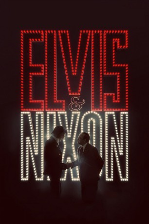

#5963 Elvis & Nixon
 
 IMDB-Wertung: 6.4 / 10
IMDB-Wertung: 6.4 / 10  Tomatometer: 77
Tomatometer: 77  Metascore: 0
Metascore: 0 
Im Winter 1970 fliegt Elvis Presley (Michael Shannon) mit seinem treuen Freund Jerry Schilling (Alex Pettyfer) nach Washington, wo er sich einen Traum erfüllen will: fürs Bureau of Narcotics and Dangerous Drugs arbeiten, im Kampf gegen Drogen. Doch weiter als bis zum Tor des Weißen Hauses kommen sie erst mal nicht – immerhin gelingt es dem King, eine handschriftliche Notiz für Präsident Nixon (Kevin Spacey) zu hinterlegen. Über dessen Mitarbeiter Egil „Bud” Krough (Colin Hanks) und Dwight Chapin (Even Peters) erreicht die Botschaft den Stabschef H.R. Haldeman (Tate Donovan), der zunächst entrüstet und knapp ablehnt. Schließlich aber dringt Elvis‘ Bitte doch bis zu Nixon durch, der einem Treffen mit dem Rock-'n'-Roll-Star widerwillig zustimmt. Ein absurdes Gespräch beginnt, in dem Elvis und der Präsident auch Verbindendes entdecken, z. B. ihre Ablehnung der Gegenkultur...
Jahr: 2016
Dauer: 87 Minuten
FSK: 0
Land: USA Studio: Bleecker Street MediaTonspuren: DTS - ,
Untertitel: Deutsch,
Auflösung: 1080p (1920x800) Größe: 7813 MB
Genre: Komödie, Geschichte
Regisseur: Liza Johnson
Drehbuch: Pete Hamill
Soundtrack:
Darsteller:
 Michael Shannon als Elvis
Michael Shannon als Elvis Kevin Spacey als Nixon
Kevin Spacey als Nixon Alex Pettyfer als Jerry
Alex Pettyfer als Jerry Johnny Knoxville als Sonny
Johnny Knoxville als Sonny Colin Hanks als Krogh
Colin Hanks als Krogh Evan Peters als Chapin
Evan Peters als Chapin Sky Ferreira als Charlotte
Sky Ferreira als Charlotte Tracy Letts als John Finlator
Tracy Letts als John Finlator Tate Donovan als Haldeman
Tate Donovan als Haldeman- Ashley Benson als Margaret, Ticket Agent
- Kamal Angelo Bolden als Mack
 Ahna O'Reilly als Mary Anne Peterson
Ahna O'Reilly als Mary Anne Peterson- Ian Hoch als Donald
 Ritchie Montgomery als Grady, Airport Security
Ritchie Montgomery als Grady, Airport Security- Nathalie Love als Stewardess #1
- Joey Sagal als Elvis Impersonator
 Poppy Delevingne als Stewardess #4
Poppy Delevingne als Stewardess #4 Marcus Lyle Brown als White House Guard #1, Wolfe
Marcus Lyle Brown als White House Guard #1, Wolfe Anthony Marble als White House Guard #2, Black
Anthony Marble als White House Guard #2, Black- Hanala Sagal als Judy, Chapin's Secretary
 Lucky Johnson als Ronnie, Limo Driver
Lucky Johnson als Ronnie, Limo Driver- Brandy Carter als Teenage Girl
- Dylan Penn als Diane, Hotel Staffer
- Katie Corwin als Secretary
 Geraldine Singer als Rose Mary Woods
Geraldine Singer als Rose Mary Woods- Vivian Winther als Sondra, Krogh Secretary
 Michael D. Anglin als Agent Moroder , uncredited
Michael D. Anglin als Agent Moroder , uncredited Patrick Constantine Bertagnolli Jr. als Secret Service Agent , uncredited
Patrick Constantine Bertagnolli Jr. als Secret Service Agent , uncredited- Bryan Blasingame als Protestor , uncredited
 Jeff Caperton als Agent Collins - Secret Service , uncredited
Jeff Caperton als Agent Collins - Secret Service , uncredited- William E. Harris als Oval Office Secret Service , uncredited
- Bob Hartnack als White House Security , uncredited
 Justin Lebrun als White House Security , uncredited
Justin Lebrun als White House Security , uncredited- Ella Maddox als Arline Passenger , uncredited
 Ron M Patterson als Cop , uncredited
Ron M Patterson als Cop , uncredited- Lisa Raziano als Airport Passenger , uncredited
 Gus Rhodes als Ollie Atkins , uncredited
Gus Rhodes als Ollie Atkins , uncredited- Jarett Shorts als Black Panther #1 , uncredited
- Cody Wise als Elvis Impersonator , uncredited
- Brittany Anne Woodford als Stewardess , uncredited
- Atlanta De Cadenet Taylor als Stewardess #2
- Skye Peters als Stewardess #3
- Harold Evans als Stan
 Danny McCarthy als Agent Duncan
Danny McCarthy als Agent Duncan- Gary Roberson als Charlotte's Dad
- Tony Beard als Senator at White House Gate , uncredited
- Candice Harrison als First Class Passenger , uncredited
- Newton James Hippolyte Jr. als Mack's Friend in diner , uncredited
- Jacquelyn Twodat Jackson als Airport passenger , uncredited
- Patrick Kearns als Guard , uncredited
Datei: X:\2016(A-F)\Elvis & Nixon (2016, FSK0, 1920x800).mkv seit 09.04.2017
Festplatte: HD 2016(A-Z)
 Es gibt insgesamt 147 Filme in der Gruppe '2016(A-F)'
Es gibt insgesamt 147 Filme in der Gruppe '2016(A-F)'